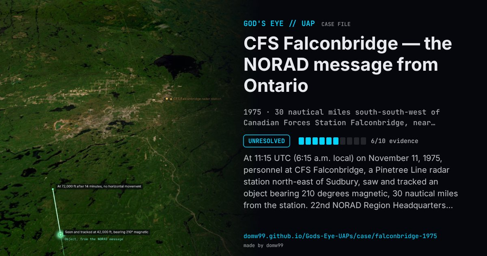

CFS Falconbridge — the NORAD message from Ontario

At 11:15 UTC (6:15 a.m. local) on November 11, 1975, personnel at CFS Falconbridge, a Pinetree Line radar station north-east of Sudbury, saw and tracked an object bearing 210 degrees magnetic, 30 nautical miles from the station. 22nd NORAD Region Headquarters passed the report to the National Research Council in Ottawa: a “circular object, brilliantly lighted with two black spots in the center”, moving straight up “at high speed from 42,000 ft. to 72,000 ft.” with no horizontal movement, for 14 minutes, under broken cloud. The major who was the prime witness took photographs but did not know if they would come out. The same observers saw a similar object bearing 270 degrees, too far away for detail, and the Ontario Provincial Police in Sudbury received many other reports. The station’s history adds that two F-106 interceptors were scrambled from Selfridge Air National Guard Base in Michigan and saw nothing.
Explanation
No explanation was given. The sighting came in the autumn of 1975, when bases along the northern U.S. border were also reporting lights and radar targets. The radar fixed only a bearing and range; the height and the vertical climb are the observers’ estimates.
What was seen
Shape: A circular, brilliantly lit object with two black spots in the centre
Witnesses: Four members of the station (a major, a captain, a corporal and a master corporal); many reports to the Ontario Provincial Police in Sudbury
Duration: 14 minutes
Sources
- NORAD 22nd Region message to the National Research Council, November 11, 1975 (transcription)
- Pinetree Line history — Falconbridge, Ontario
- Wikipedia — CFS Falconbridge
Browse
- Canada
- 1970s
- Unresolved
- Radar-visual cases
- Official government documents
- Many independent witnesses
- Military witnesses
- Radar tracking
- Spheres and orbs